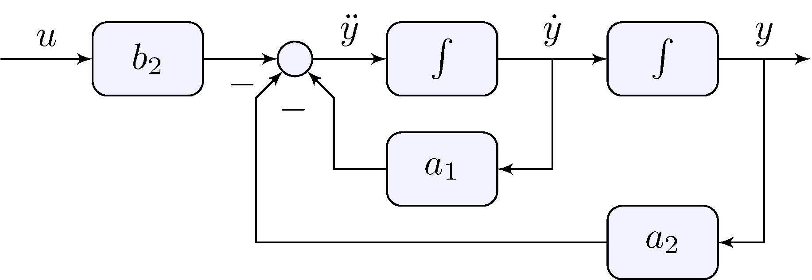
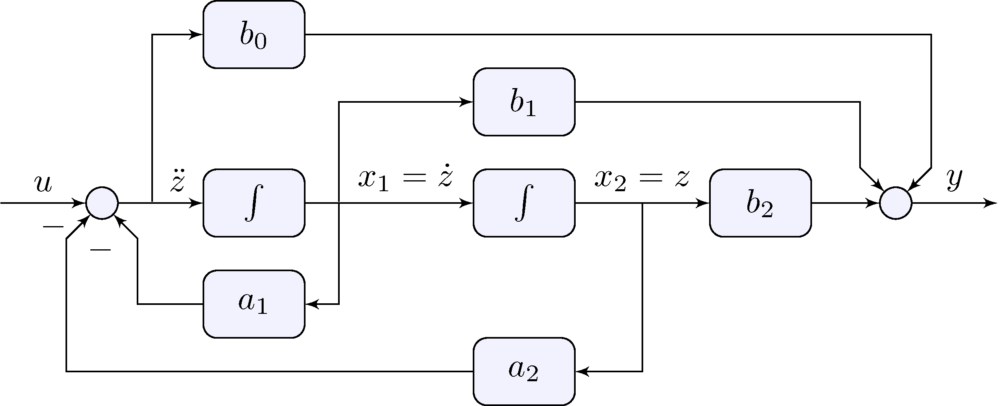
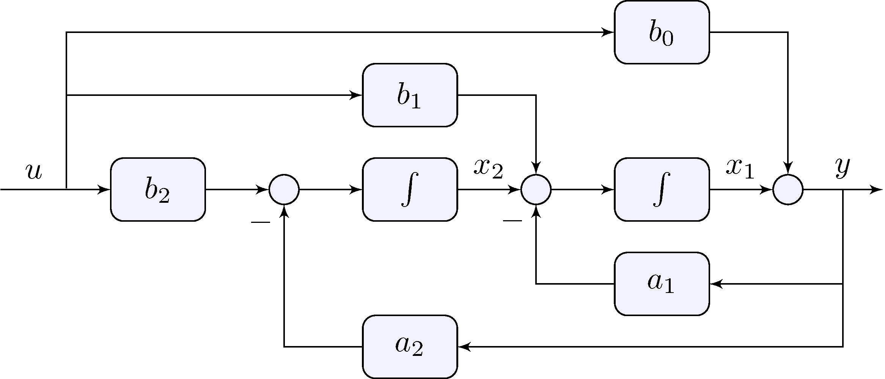
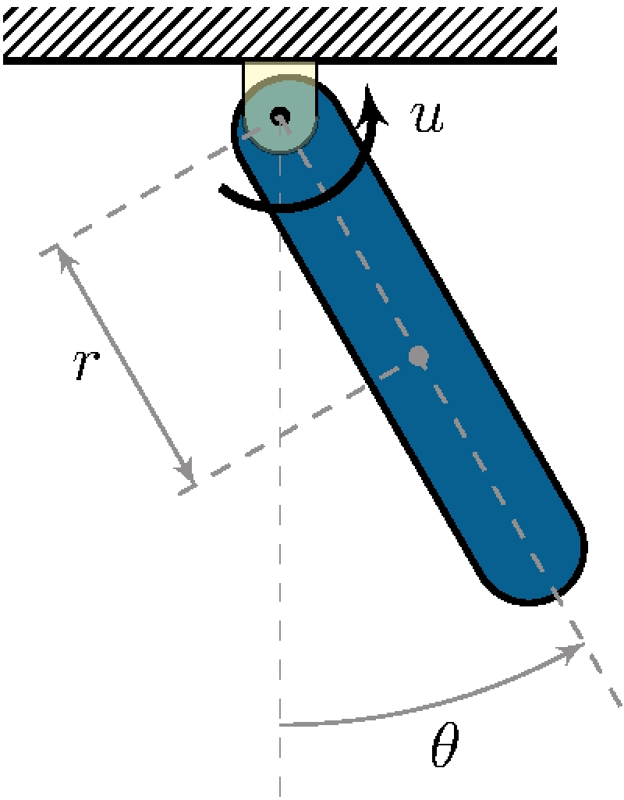
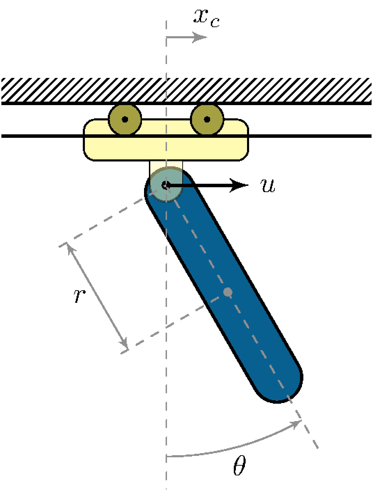
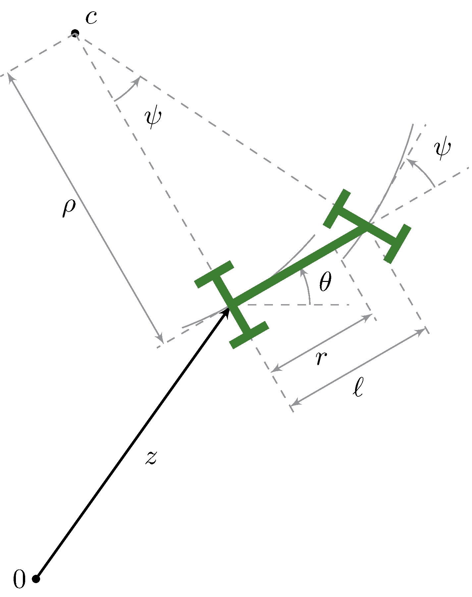
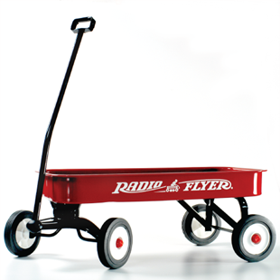
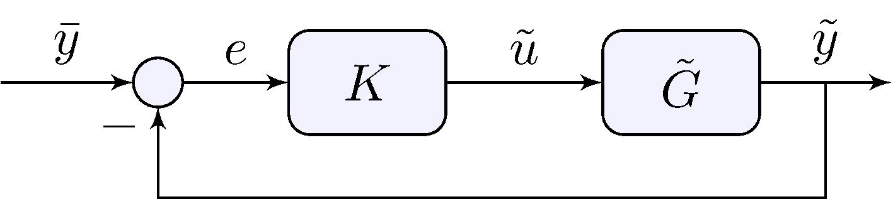
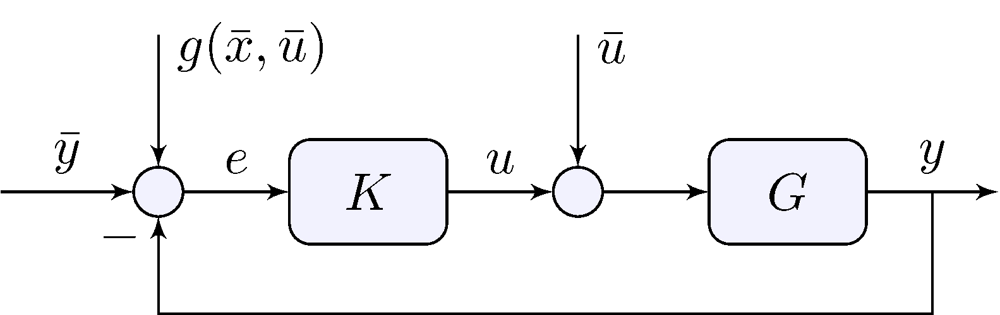

Maurício C. de Oliveira
Chapter 5: State-Space Models and
Linearization
linearcontrol.info/fundamentals
Integrators
Water tank
\[\begin{align*} y(t) &= \frac{1}{A} \int_{0}^{t} u(\tau) \, d \tau \end{align*}\]
\(y\): water level,
\(u\): input flow
\(A\): cross-section
area
Capacitor
\[\begin{align*} v(t) &= \frac{1}{C} \int_{0}^{t} i(\tau) \, d\tau \end{align*}\]
\(v\): voltage, \(i\): input current
\(C\): capacitance
Fly-wheel without friction
\[\begin{align*} \omega(t) &= \frac{1}{J} \int_{0}^{t} f(\tau) \, d\tau \end{align*}\]
\(\omega\): angular
speed, \(i\): input torque
\(J\): moment of
inertia
Trapezoidal integration rule
\[\begin{align*} y(k T) - y(k T - T) &= \int_{k T - T}^{k T} u(t) \, dt \\ &\approx \frac{T}{2} \left ( u(k T) - u(k T - T) \right ) \end{align*}\]
\(y\): integrated
output, \(u\): input
\(T\): sampling
period
\[\begin{align*} \ddot{y} + a_1 \dot{y} + a_2 \, y &= b_2 u \end{align*}\]
\[\begin{align*} \ddot{y} &= b_2 u - a_1 \dot{y} - a_2 \, y \end{align*}\]

\[\begin{align*} \ddot{y} + a_1 \dot{y} + a_2 \, y &= b_0 \ddot{u} + b_1 \dot{u} + b_2 u \end{align*}\]
\[\begin{align*} \ddot{y} + a_1 \dot{y} + a_2 \, y &= u_0 + u_1 + u_2, & u_0 &= b_0 \ddot{u}, & u_1 &= b_1 \dot{u}, & u_2 &= b_2 u \end{align*}\] can be broken down into \[\begin{align*} \ddot{z} + a_1 \dot{z} + a_2 \, z &= u, & y &= b_0 \ddot{z} + b_1 \dot{z} + b_2 z \end{align*}\]

\[\begin{align*} \ddot{y} + a_1 \dot{y} + a_2 \, y &= b_0 \ddot{u} + b_1 \dot{u} + b_2 u \end{align*}\]
\[\begin{align*} \ddot{y} &= b_0 \, \ddot{u} + \left ( b_1 \, \dot{u} - a_1 \, \dot{y} \right ) + \left ( b_2 \, u - a_2 \, y \right ) \end{align*}\]
\[\begin{align*} y(t) &= b_0 u(t) + \int_{0}^{t} \left [ b_1 \, u(\tau) - a_1 \, y(\tau) + \int_{0}^{\tau} \left ( b_2 \, u(\sigma) - a_2 \, y(\sigma) \right ) \, d\sigma \right ] d\tau \end{align*}\]

\[\begin{align*} %\label{eq:ode} y^{(n)}(t) + a_1 y^{(n-1)}(t) + \cdots + a_n y(t) = b_0 u^{(m)}(t) + b_1 y^{(m-1)}(t) + \cdots + b_m u(t) \end{align*}\]
Must be proper: \(m \leq n\)
\[\begin{align*} y &= \dot{u} \end{align*}\]
Impossible to realize!
Differentiator
\[\begin{align*} u(t) &= \cos(\omega t) & & \implies & y_{ss}(t) &= -|\omega| \sin(\omega t) \end{align*}\]
Unbounded amplification at high frequencies!
Integrators
\[\begin{align*} u(t) &= \cos(\omega t) & & \implies & y_{ss}(t) &= \frac{1}{|\omega|} \sin(\omega t) \end{align*}\]
Unbounded storage at low frequencies: can be dealt with in closed-loop
Controllable Realization
Integrator output = state
\[\begin{align*} x_1 &= \dot{z}, & x_2 &= z \end{align*}\]
Integrator input = equations
\[\begin{align*} \dot{x}_1 &= u - a_1 x_1 - a_2 x_2, & \dot{x}_2 &= x_1 \end{align*}\]
Output
\[\begin{align*} y &= b_0 \dot{x}_1 + b_1 x_1 + b_2 x_2 \end{align*}\]
\[\begin{align*} x_1 &= \dot{z}, & x_2 &= z \end{align*}\]
\[\begin{align*} \dot{x}_1 &= u - a_1 x_1 - a_2 x_2, & \dot{x}_2 &= x_1 \end{align*}\]
\[\begin{align*} y &= (b_1 - a_1 b_0) x_1 + (b_2 - a_2 b_0) x_2 + b_0 u \end{align*}\]
\[\begin{align*} \dot{x}_1 &= u - a_1 x_1 - a_2 x_2 \\ \dot{x}_2 &= x_1 \\ y &= (b_1 - a_1 b_0) x_1 + (b_2 - a_2 b_0) x_2 + b_0 u \end{align*}\]
\[\begin{align*} \begin{pmatrix} \dot{x}_1 \\ \dot{x}_2 \end{pmatrix} &= \begin{bmatrix} - a_1 & - a_2 \\ 1 & 0 \end{bmatrix} \begin{pmatrix} x_1 \\ x_2 \end{pmatrix} + \begin{bmatrix} 1 \\ 0 \end{bmatrix} u \\ y &= \begin{bmatrix} b_1 - a_1 b_0 & b_2 - a_2 b_0 \end{bmatrix} \begin{pmatrix} x_1 \\ x_2 \end{pmatrix} + \begin{bmatrix} b_0 \end{bmatrix} u \end{align*}\]
\[\begin{align*} x_1, \qquad x_2 \end{align*}\]
\[\begin{align*} \dot{x}_1 &= b_1 u - a_1 y + x_2 \\ \dot{x}_2 &= b_2 u - a_2 y \end{align*}\]
\[\begin{align*} y &= b_0 u + x_1 \end{align*}\]
\[\begin{align*} x_1, \qquad x_2 \end{align*}\]
\[\begin{align*} \dot{x}_1 &= - a_1 x_1 + x_2 + (b_1 - a_1 b_0) u \\ \dot{x}_2 &= - a_2 x_1 + (b_2 - a_2 b_0) u \end{align*}\]
\[\begin{align*} y &= b_0 u + x_1 \end{align*}\]
All equations
\[\begin{align*} \dot{x}_1 &= - a_1 x_1 + x_2 + (b_1 - a_1 b_0) u \\ \dot{x}_2 &= - a_2 x_1 + (b_2 - a_2 b_0) u \\ y &= b_0 u + x_1 \end{align*}\]
State-space form
\[\begin{align*} \begin{pmatrix} \dot{x}_1 \\ \dot{x}_2 \end{pmatrix} &= \begin{bmatrix} - a_1 & 1 \\ - a_2 & 0 \end{bmatrix} \begin{pmatrix} x_1 \\ x_2 \end{pmatrix} + \begin{bmatrix} b_1 - a_1 b_0 \\ b_2 - a_2 b_0 \end{bmatrix} u \\ y &= \begin{bmatrix} 1 & 0 \end{bmatrix} \begin{pmatrix} x_1 \\ x_2 \end{pmatrix} + \begin{bmatrix} b_0 \end{bmatrix} u \end{align*}\]
\[\begin{align*} \ddot{y} + a_1 \dot{y} + a_2 \, y &= b_0 \ddot{u} + b_1 \dot{u} + b_2 u \end{align*}\]
\[\begin{align*} \begin{pmatrix} \dot{x}_1 \\ \dot{x}_2 \end{pmatrix} &= \begin{bmatrix} - a_1 & - a_2 \\ 1 & 0 \end{bmatrix} \begin{pmatrix} x_1 \\ x_2 \end{pmatrix} + \begin{bmatrix} 1 \\ 0 \end{bmatrix} u \\ y &= \begin{bmatrix} b_1 - a_1 b_0 & b_2 - a_2 b_0 \end{bmatrix} \begin{pmatrix} x_1 \\ x_2 \end{pmatrix} + \begin{bmatrix} b_0 \end{bmatrix} u \end{align*}\]
\[\begin{align*} \begin{pmatrix} \dot{x}_1 \\ \dot{x}_2 \end{pmatrix} &= \begin{bmatrix} - a_1 & 1 \\ - a_2 & 0 \end{bmatrix} \begin{pmatrix} x_1 \\ x_2 \end{pmatrix} + \begin{bmatrix} b_1 - a_1 b_0 \\ b_2 - a_2 b_0 \end{bmatrix} u \\ y &= \begin{bmatrix} 1 & 0 \end{bmatrix} \begin{pmatrix} x_1 \\ x_2 \end{pmatrix} + \begin{bmatrix} b_0 \end{bmatrix} u \end{align*}\]
\[\begin{align*} \dot{x} &= A x + B u \\ y &= C x + D u \end{align*}\]
\(x \in \mathbb{R}^n, u \in \mathbb{R}^1, y \in \mathbb{R}^1\)
\(x \in \mathbb{R}^n, u \in \mathbb{R}^m, y \in \mathbb{R}^p\)
\[\begin{align*} s X(s) - x(0^-) &= A X(s) + B U(s) & & \implies & X(s) &= (s I - A)^{-1} B U(s) + (s I - A)^{-1} x(0^-) \end{align*}\]
\[\begin{align*} Y(s) &= G(s) U(s) + F(s) x(0^-) \end{align*}\] \[\begin{align*} G(s) &= C (s I - A)^{-1} B + D, & F(s) &= C (s I - A)^{-1} \end{align*}\]
\[\begin{align*} \dot{x} &= A x + B u \\ y &= C x + D u \end{align*}\]
\[\begin{align*} G(s) &= C (s I - A)^{-1} B + D \end{align*}\]
\[\begin{align*} \lim_{|s| \rightarrow \infty} (s I - A)^{-1} &= 0 & &\implies & \lim_{|s| \rightarrow \infty} G(s) &= D \end{align*}\]
\[\begin{align*} |s I - A| = \det(s I - A) = 0, \end{align*}\] that is eigenvalues of \(A\), are the poles of \(G(s)\)
\[\begin{align*} \dot{x} &= A x + B u \\ y &= C x + D u \end{align*}\]
\[\begin{align*} \mathcal{L}^{-1} \{ (s I - A)^{-1} \} = e^{A t}, \quad t \geq 0 \end{align*}\]
\[\begin{align*} g(t) = \mathcal{L}^{-1} \{ G(s) \} = \mathcal{L}^{-1} \{ C (s I - A)^{-1} B + D \} = C e^{A t} B + D \delta(t), \quad t \geq 0 \end{align*}\]
\[\begin{align*} \dot{x} &= A x + B u \\ y &= C x + D u \end{align*}\]
\[\begin{align*} \mathcal{L}^{-1} \{ (s I - A)^{-1} \} = e^{A t}, \quad t \geq 0 \end{align*}\]
\[\begin{align*} y(t) = \mathcal{L}^{-1} \{ F(s) x(0^-) \} = \mathcal{L}^{-1} \{ C (s I - A)^{-1} x(0^-) \} = C e^{A t} x(0^-), \quad t \geq 0 \end{align*}\]
\[\begin{align*} \operatorname{Re}(\lambda_i(A)) &< 0 & & \Leftrightarrow & \lim_{t \rightarrow \infty} e^{A t} &= 0 \end{align*}\]
We say \(A\) is Hurwitz
\[\begin{align*} \dot{x} &= A x + B u \\ y &= C x + D u \end{align*}\]
\[\begin{align*} \mathcal{L}^{-1} \{ (s I - A)^{-1} \} = e^{A t}, \quad t \geq 0 \end{align*}\]
\[\begin{align*} y(t) = \mathcal{L}^{-1} \{ F(s) x(0^-) \} = \mathcal{L}^{-1} \{ C (s I - A)^{-1} x(0^-) \} = C e^{A t} x(0^-), \quad t \geq 0 \end{align*}\]
If \(A\) is Hurwitz then \[\begin{align*} \lim_{t \rightarrow \infty} x(t) = \lim_{t \rightarrow \infty} e^{A t} \, x(0^-) = 0 \quad \implies \quad \lim_{t \rightarrow \infty} y(t) = \lim_{t \rightarrow \infty} C e^{A t} \, x(0^-) = 0 \end{align*}\]
State-space model
\[\begin{align} A &= \begin{bmatrix} 0 & 1 \\ 0 & 0 \end{bmatrix}, & B &= \begin{bmatrix} 1 \\ \beta \end{bmatrix}, & C &= \begin{bmatrix} \alpha & 1 \end{bmatrix}, & D &= \gamma \end{align}\]
order: \(n = 2\)
Transfer-function
\[\begin{align*} G(s) &= C (s I - A)^{-1} B + D = \frac{\alpha + \beta}{s} + \frac{\alpha \beta}{s^2} + \gamma \end{align*}\]
\(\alpha \, \beta = 0, \, \alpha + \beta \neq 0 \implies\) transfer-function has order \(1\)
\(\alpha = \beta = 0 \implies\) transfer-function has order \(0\)
State-space realization may not be minimal
Keywords: controllability and observability
\[\begin{align} \label{eq:exss2} A &= -\begin{bmatrix} 1 & 0 \\ 0 & 1 \end{bmatrix}, &\!\! B &= \begin{bmatrix} 2 & 0 \\ 0 & 2 \end{bmatrix}, &\!\! C &= - \begin{bmatrix} 0 & {1}/{2} \\ 1 & {1}/{2} \end{bmatrix}, &\!\! D &= \begin{bmatrix} 1 & 1 \\ 1 & 1 \end{bmatrix} \end{align}\]
order: \(n = 2\) is minimal
\[\begin{align*} G(s) &= \begin{bmatrix} 1 & \displaystyle \frac{s}{s + 1} \\[2ex] \displaystyle \frac{s - 1}{s + 1} & \displaystyle \frac{s}{s + 1} \end{bmatrix} \end{align*}\]
“looks” like order \(1\); \(s = 0\) is a zero but \(s = 1\) is not!
MIMO systems can be much more complicated!
State-space nonlinear model
\[\begin{align*} \dot{x}(t) &= f(x(t), u(t)) \\ y(t) &= g(x(t), u(t)) \end{align*}\]
Taylor series
\[\begin{align*} f(x, u) &\approx f(\bar{x}, \bar{u}) + A (x - \bar{x}) + B (u - \bar{u}) \\ g(x, u) &\approx g(\bar{x}, \bar{u}) + C (x - \bar{x}) + D (u - \bar{u}) \end{align*}\] where \[\begin{align*} A &= \left . \frac{\partial f}{\partial x} \right |_{{\scriptstyle x = \bar{x} \\[-1ex] \scriptstyle u = \bar{u}}}, & B &= \left . \frac{\partial f}{\partial u} \right |_{{\scriptstyle x = \bar{x} \\[-1ex] \scriptstyle u = \bar{u}}}, & C &= \left . \frac{\partial g}{\partial x} \right |_{{\scriptstyle x = \bar{x} \\[-1ex] \scriptstyle u = \bar{u}}}, & D &= \left . \frac{\partial g}{\partial u} \right |_{{\scriptstyle x = \bar{x} \\[-1ex] \scriptstyle u = \bar{u}}} \end{align*}\]
\[\begin{align*} \dot{x}(t) &= f(x(t), u(t)) \\ y(t) &= g(x(t), u(t)) \end{align*}\]
\[\begin{align*} (\bar{x}, \bar{u}) : \quad f(\bar{x}, \bar{u}) &= 0 \end{align*}\]
\[\begin{align} \tilde{x}(t) &= x(t) - \bar{x}, & \tilde{u}(t) &= u(t) - \bar{u}, & \tilde{y}(t) &= y(t) - g(\bar{x},\bar{u}) \end{align}\]
\[\begin{align*} f(x, u) &\approx f(\bar{x}, \bar{u}) + A (x - \bar{x}) + B (u - \bar{u}) = A \tilde{x} + B \tilde{u} \\ g(x, u) &\approx g(\bar{x}, \bar{u}) + C (x - \bar{x}) + D (u - \bar{u}) = C \tilde{x} + D \tilde{u} \end{align*}\]
\[\begin{align*} \dot{x}(t) &= f(x(t), u(t)) \\ y(t) &= g(x(t), u(t)) \end{align*}\]
\[\begin{align*} (\bar{x}, \bar{u}) : \quad f(\bar{x}, \bar{u}) &= 0 \end{align*}\]
\[\begin{align} \tilde{x}(t) &= x(t) - \bar{x}, & \tilde{u}(t) &= u(t) - \bar{u}, & \tilde{y}(t) &= y(t) - g(\bar{x},\bar{u}) \end{align}\]
\[\begin{align*} \dot{\tilde{x}}(t) &= A \, \tilde{x}(t) + B \, \tilde{u}(t) \\ \tilde{y}(t) &= C \, \tilde{x}(t) + D \, \tilde{u}(t) \end{align*}\]
\[\begin{align*} \dot{x}(t) &= f(x(t), u(t)) \\ y(t) &= g(x(t), u(t)) \end{align*}\]
\[\begin{align*} \dot{\tilde{x}}(t) &= A \, \tilde{x}(t) + B \, \tilde{u}(t) \\ \tilde{y}(t) &= C \, \tilde{x}(t) + D \, \tilde{u}(t) \end{align*}\]
If \(A\) is Hurwitz then there exists \(\epsilon > 0\) such that for any \(x(0)\) within \(\| x(0) - \bar{x} \| < \epsilon\) and \(u(t) = \bar{u}\) then \(\lim_{t \rightarrow \infty} x(t) \rightarrow \bar{x}\), that is \(x(t)\) converges to \(\bar{x}\)
If \(A\) has at least one eigenvalue with positive real part then there exists solutions that diverge from \(\bar{x}\)
If \(A\) is Hurwitz then there exists \(\epsilon > 0\) such that for any \(x(0)\) within \(\| x(0) - \bar{x} \| < \epsilon\) and \(u(t) = \bar{u}\) then \(\lim_{t \rightarrow \infty} x(t) \rightarrow \bar{x}\), that is \(x(t)\) converges to \(\bar{x}\)
If \(A\) has at least one eigenvalue with positive real part then there exists solutions that diverge from \(\bar{x}\)

Dynamic model
\[\begin{align*} J_r \, \ddot{\theta} + b \, \dot{\theta} + m \, g \, r \sin \theta &= u, & J_r &= J + m r^2 > 0 \end{align*}\]
Nonlinear state-space model
\[\begin{align*} x &= \begin{pmatrix} x_1 \\ x_2 \end{pmatrix} = \begin{pmatrix} \dot{\theta} \\ \theta \end{pmatrix}, & f(x, u) &= \begin{pmatrix} b_2 u - a_1 x_1 - a_2 \sin x_2 \\ x_1 \end{pmatrix}, & g(x, u) &= x_2 \end{align*}\]
\[\begin{align*} f(\bar{x}, \bar{u}) &= \begin{pmatrix} - a_1 \bar{x}_1 - a_2 \sin \bar{x}_2 \\ \bar{x}_1 \end{pmatrix} = \begin{pmatrix} 0 \\ 0 \end{pmatrix} & & \implies & \bar{x}_1 &= 0 \quad \text{and} \quad \bar{x}_2 = k \, \pi, \quad k \in \mathbb{Z} \end{align*}\]
\[\begin{align*} \frac{\partial f}{\partial x} &= \begin{bmatrix} - a_1 & - a_2 \cos x_2 \\ 1 & 0 \end{bmatrix}, & \frac{\partial f}{\partial u} &= \begin{bmatrix} b_2 \\ 0 \end{bmatrix}, & \frac{\partial g}{\partial x} &= \begin{bmatrix} 0 & 1 \end{bmatrix}, & \frac{\partial g}{\partial u} &= \begin{bmatrix} 0 \end{bmatrix} \end{align*}\]
\[\begin{align*} (\bar{x}, \bar{u}) &= \left ( \begin{pmatrix} 0 \\ 0 \end{pmatrix}, 0 \right ): & A_0 &= \begin{bmatrix} - a_1 & - a_2 \\ 1 & 0 \end{bmatrix}, & B_0 &= \begin{bmatrix} b_2 \\ 0 \end{bmatrix}, & C_0 &= \begin{bmatrix} 0 & 1 \end{bmatrix}, & D_0 &= \begin{bmatrix} 0 \end{bmatrix} \end{align*}\]
\[\begin{align*} G_0(s) &= C_0 (s I - A_0)^{-1} B_0 + D_0 = \frac{b_2}{s^2 + a_1 s + a_2} \end{align*}\]
\[\begin{align*} f(\bar{x}, \bar{u}) &= \begin{pmatrix} - a_1 \bar{x}_1 - a_2 \sin \bar{x}_2 \\ \bar{x}_1 \end{pmatrix} = \begin{pmatrix} 0 \\ 0 \end{pmatrix} & & \implies & \bar{x}_1 &= 0 \quad \text{and} \quad \bar{x}_2 = k \, \pi, \quad k \in \mathbb{Z} \end{align*}\]
\[\begin{align*} (\bar{x}, \bar{u}) &= \left ( \begin{pmatrix} 0 \\ 0 \end{pmatrix}, 0 \right ): & A_0 &= \begin{bmatrix} - a_1 & - a_2 \\ 1 & 0 \end{bmatrix}, & B_0 &= \begin{bmatrix} b_2 \\ 0 \end{bmatrix}, & C_0 &= \begin{bmatrix} 0 & 1 \end{bmatrix}, & D_0 &= \begin{bmatrix} 0 \end{bmatrix} \end{align*}\]
\[\begin{align*} G_0(s) &= C_0 (s I - A_0)^{-1} B_0 + D_0 = \frac{b_2}{s^2 + a_1 s + a_2} \end{align*}\] If \(a_1 > 0\) and \(a_2 > 0\) then \(A_0\) is Hurwitz, \(G_0\) is asymptotically stable
\[\begin{align*} f(\bar{x}, \bar{u}) &= \begin{pmatrix} - a_1 \bar{x}_1 - a_2 \sin \bar{x}_2 \\ \bar{x}_1 \end{pmatrix} = \begin{pmatrix} 0 \\ 0 \end{pmatrix} & & \implies & \bar{x}_1 &= 0 \quad \text{and} \quad \bar{x}_2 = k \, \pi, \quad k \in \mathbb{Z} \end{align*}\]
\[\begin{align*} \frac{\partial f}{\partial x} &= \begin{bmatrix} - a_1 & - a_2 \cos x_2 \\ 1 & 0 \end{bmatrix}, & \frac{\partial f}{\partial u} &= \begin{bmatrix} b_2 \\ 0 \end{bmatrix}, & \frac{\partial g}{\partial x} &= \begin{bmatrix} 0 & 1 \end{bmatrix}, & \frac{\partial g}{\partial u} &= \begin{bmatrix} 0 \end{bmatrix} \end{align*}\]
\[\begin{align*} (\bar{x}, \bar{u}) &= \left ( \begin{pmatrix} 0 \\ \pi \end{pmatrix}, 0 \right ): & A_\pi &= \begin{bmatrix} - a_1 & a_2 \\ 1 & 0 \end{bmatrix}, & B_\pi &= \begin{bmatrix} b_2 \\ 0 \end{bmatrix}, & C_\pi &= \begin{bmatrix} 0 & 1 \end{bmatrix}, & D_\pi &= \begin{bmatrix} 0 \end{bmatrix} \end{align*}\]
\[\begin{align*} G_\pi(s) &= C_\pi (s I - A_\pi)^{-1} B_\pi + D_\pi = \frac{b_2}{s^2 + a_1 s - a_2} \end{align*}\]
\[\begin{align*} f(\bar{x}, \bar{u}) &= \begin{pmatrix} - a_1 \bar{x}_1 - a_2 \sin \bar{x}_2 \\ \bar{x}_1 \end{pmatrix} = \begin{pmatrix} 0 \\ 0 \end{pmatrix} & & \implies & \bar{x}_1 &= 0 \quad \text{and} \quad \bar{x}_2 = k \, \pi, \quad k \in \mathbb{Z} \end{align*}\]
\[\begin{align*} (\bar{x}, \bar{u}) &= \left ( \begin{pmatrix} 0 \\ \pi \end{pmatrix}, 0 \right ): & A_\pi &= \begin{bmatrix} - a_1 & a_2 \\ 1 & 0 \end{bmatrix}, & B_\pi &= \begin{bmatrix} b_2 \\ 0 \end{bmatrix}, & C_\pi &= \begin{bmatrix} 0 & 1 \end{bmatrix}, & D_\pi &= \begin{bmatrix} 0 \end{bmatrix} \end{align*}\]
\[\begin{align*} G_\pi(s) &= C_\pi (s I - A_\pi)^{-1} B_\pi + D_\pi = \frac{b_2}{s^2 + a_1 s - a_2} \end{align*}\] If \(a_1 > 0\) and \(a_2 > 0\) then \(A_\pi\) is not Hurwitz, \(G_\pi\) is unstable

Dynamic model
\[\begin{align*} (J_p + m_p \, r^2) \ddot{\theta} + m_p \, r \, \ddot{x}_c \cos \theta + b_p \, \dot{\theta} + m_p \, g \, r \sin \theta &= 0 \\ m_p \, r \, \ddot{\theta} \cos \theta + (m_p + m_c) \, \ddot{x}_c + b_c \, \dot{x}_c - m_p \, r \, \dot{\theta}^2 \sin \theta &= u \end{align*}\]
Second-order vector differential equation
\[\begin{align*} M(q) \, \ddot{q} + F(q, \dot{q}) &= G u, & q &= \begin{pmatrix} \theta \\ x_c \end{pmatrix} \end{align*}\] \[\begin{align*} M(q) &= \begin{bmatrix} J_p + m_p \, r^2 & m_p \, r \cos q_1 \\ m_p \, r \cos q_1 & m_p + m_c \end{bmatrix}, & F(q,\dot{q}) &= \begin{pmatrix} b_p \dot{q}_1 + m_p \, g \, r \sin q_1 \\ b_c \dot{q}_2 - m_p \, r \, \dot{q}_1^2 \sin q_1 \end{pmatrix}, & G &= \begin{pmatrix} 0 \\ 1 \end{pmatrix} \end{align*}\]
Nonlinear state-space model
\[\begin{align*} x &= \begin{pmatrix} q \\ \dot{q} \end{pmatrix}, & f(x,u) &= f(q,\dot{q},u) = \begin{pmatrix} \dot{q} \\ M^{-1}(q) \left[ G u - F(q, \dot{q}) \right] \end{pmatrix} \end{align*}\]
Simplified nonlinear state-space model
\[\begin{align*} x &= \begin{pmatrix} \theta \\ \dot{\theta} \\ \dot{x}_c \end{pmatrix}, & f(x,u) &= %f(\theta,\dot{\theta},\dot{x}_c,u) = \begin{pmatrix} \dot{x_1} \\ M^{-1}(x_1) \left[ G u - F(x) \right] \end{pmatrix} \end{align*}\]
\[\begin{align*} \bar{x}_1 &= \bar{q}_1 = k \pi, \quad k \in \mathbb{Z}, & \bar{x}_2 = \bar{x}_3 &= \bar{\dot{q}}_1 = \bar{\dot{q}}_2 = 0 \end{align*}\]
\[\begin{align*} A_0 &= \frac{1}{J} \begin{bmatrix} 0 & J & 0 \\ % 0 & 0 & 0 & J \\ -g \, m_r \, r & {-b_p \, m_r}/{m_p} & b_c \, r \\ g \, m_p \, r^2 & b_p \, r & {-b_c J_r}/{m_p} \\ \end{bmatrix}\!\!, & B_0 &= \frac{1}{J} \begin{bmatrix} 0 \\ %0 \\ -r \\ {J_r}/{m_p} \end{bmatrix} \end{align*}\]
\[\begin{align*} J_r &= J_p + m_p r^2 > 0, & m_r &= m_p + m_c > 0, & J &= J_r \frac{m_r}{m_p} - m_p r^2 > 0 \end{align*}\]
\[\begin{align*} \text{Eigenvalues of } A_0 &: & & 0, & & j \sqrt{g (m_p + m_c) r}, & & -j \sqrt{g (m_p + m_c) r} \end{align*}\]
Oscillator
\[\begin{align*} \bar{x}_1 &= \bar{q}_1 = k \pi, \quad k \in \mathbb{Z}, & \bar{x}_2 = \bar{x}_3 &= \bar{\dot{q}}_1 = \bar{\dot{q}}_2 = 0 \end{align*}\]
\[\begin{align*} A_\pi &= \frac{1}{J} \begin{bmatrix} 0 & J & 0 \\ % 0 & 0 & 0 & J \\ g \, m_r \, r & {-b_p \, m_r}/{m_p} & - b_c \, r \\ g \, m_p \, r^2 & - b_p \, r & {-b_c J_r}/{m_p} \\ \end{bmatrix}\!\!, & B_\pi &= \frac{1}{J} \begin{bmatrix} 0 \\ r \\ {J_r}/{m_p} \end{bmatrix} \end{align*}\]
\[\begin{align*} J_r &= J_p + m_p r^2 > 0, & m_r &= m_p + m_c > 0, & J &= J_r \frac{m_r}{m_p} - m_p r^2 > 0 \end{align*}\]
\[\begin{align*} \text{Eigenvalues of } A_\pi &: & & 0, & & \sqrt{g (m_t + m_c) r}, & & -\sqrt{g (m_t + m_c) r} \end{align*}\]
Unstable


Nonlinear state-space model (kinematic)
\[\begin{align*} x &= \begin{pmatrix} z_x \\ z_y \\[.5ex] \theta \end{pmatrix}, & u &= \tan \psi, & f(x, u) &= \begin{pmatrix} v \cos \theta \\ v \sin \theta \\ \displaystyle u {v}/{\ell} \end{pmatrix} \end{align*}\]
\[\begin{align*} x &= \begin{pmatrix} z_x \\ z_y \\[.5ex] \theta \end{pmatrix}, & u &= \tan \psi, & f(x, u) &= \begin{pmatrix} v \cos \theta \\ v \sin \theta \\ \displaystyle u {v}/{\ell} \end{pmatrix} \end{align*}\]
\[\begin{align*} \frac{\partial f}{\partial x} &= \begin{bmatrix} 0 & 0 & - v \sin \theta \\ 0 & 0 & v \cos \theta \\ 0 & 0 & 0 \end{bmatrix}, & \frac{\partial f}{\partial u} &= \begin{bmatrix} 0 \\ 0 \\ {v}/{\ell} \end{bmatrix} \end{align*}\]
\[\begin{align*} \bar{x}(t) &= \begin{pmatrix} z_x(t) \\ z_y(t) \\[.5ex] \theta(t) \end{pmatrix} = \begin{pmatrix} v \, t \\ 0 \\ 0 \end{pmatrix}, & \bar{u}(t) &= 0: & A(t) = A &= \begin{bmatrix} 0 & 0 & 0 \\ 0 & 0 & v \\ 0 & 0 & 0 \end{bmatrix}, & B(t) = B &= \begin{bmatrix} 0 \\ 0 \\ {v}/{\ell} \end{bmatrix} \end{align*}\]
Design

Linear controller \(K\) is designed based on the linearized model \(\tilde{G}\)
\[\begin{align*} \tilde{u} &= K (\bar{y} - \tilde{y}), & \tilde{u} &= u - \bar{u}, & \tilde{y} &= y - g(\bar{x},\bar{u}) \end{align*}\]
Implementation
Needs shifting \[\begin{align} u &= \bar{u} + K [\bar{y} + g(\bar{x},\bar{u}) - y] \end{align}\]
5.8 Linear Control of Nonlinear Systems
Design
Implementation

Shifted set-point and control
\[\begin{align} u &= \bar{u} + K e, & e &= \bar{y} + g(\bar{x},\bar{u}) - y \end{align}\]
Controller acts on transient but does not affect steady-state equilibrium (\(K(0) = 0\))
Linearize about shifted equilibrium to check for stability